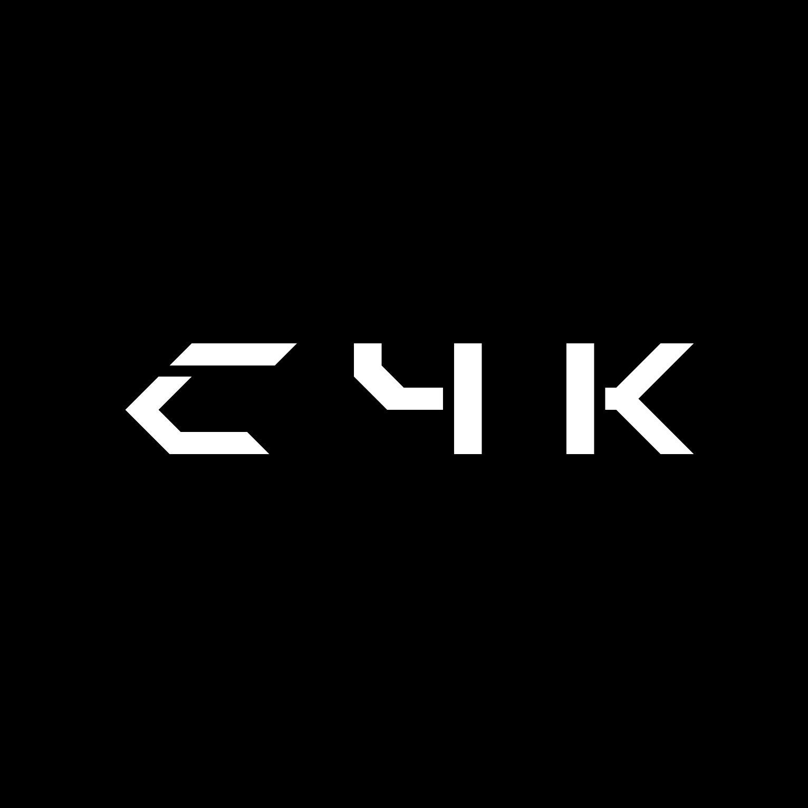

Kirirom Institute

of Technology
@waritocomatta
MOTONE
ADACHI
足立
素音
| About this LT. |
| A lot of Japanese text and English text in this slide. Because, This slide made for LT (Lightning Talk) party in Japan. And, This slide made for Kirirom Institute of Technology members. ( Cambodia University ) |
| このスライドについて |
| このスライドには日本語のテキストと英語のテキストがたくさんあります。なぜなら、このスライドは日本のLT（Lightning Talk）パーティーのために作られたものです。そして、このスライドはKirirom工科大学のメンバーのために作られました。 （カンボジア大学） |

|
|
You can add LINE Bot to your LINE friend list By using this QR code. When you send to message to this LINE Bot, your message shown on this slide. |
IoT Device and
Server Side
in JavaScript
programming.
Who am I ?
| Motone Adachi ( waricoma ) |
|
わりとこまった (I was in trouble so so.) → waritocomatta → waricoma (Please call me waricoma. 👍) |
|
Programmer (Node.js C++ Ruby PHP...) more info (I like Web technology.) |
|
N High School (~ 03/2019) → Kirirom Institute of Technology (~ 04/2019) |
| KADOKAWA DWANGO N High School | |
| Place | Okinawa 🇯🇵 |
| OPEN | 2016~ |
| Background company | KADOKAWA and Dwango (Publishing, Film, Music, Goods, Event, Game, IT,NicoNico Video ...etc) |
| Students total | 9792 (going to be 10000 or more at 07/2019) |
| Price | ¥68700/year |
| Programming, English, Start up business club (started EasyGO inc), Chinese, Illustrator, Voice actor, Game, Agriculture, Writer, Fashion ..etc | |
| KADOKAWA DWANGO N High School | |
| Where does OBOG go to school and company? | |
| 慶應義塾大学｜早稲田大学｜筑波大学｜上智大学｜東京理科大学｜東京工業大学｜青山学院大学｜明治大学｜立教大学｜Kirirom Institute of Technology ~ キリロム工科大学 ...etc | ANA｜JTBエンタテインメント｜KIDS COMPANY｜グリー株式会社｜マネーフォーワード株式会社｜航空自衛隊 自衛官候補生｜公務員（東京都特別採用枠）｜TBCグループ株式会社 ...etc |
【#超会議2019】#N高文化祭 の実行委員長と副委員長の二人が、新元号「令和」を発表したことで記憶に新しい、菅官房長官と一緒に写真を撮りました📸
— Ｎ高等学校（学校法人角川ドワンゴ学園） (@nhigh_info) 28 April 2019
貴重な体験です！#令和 pic.twitter.com/sPjdqy6CaD
| Kirirom Institute of Technology ~ キリロム工科大学 | |
| Place | Kirirom 🇰🇭 |
| OPEN | 2014~ |
| Background company | A2A (vKirirom Pine Resort, Real estate development ...etc) |
| Students total | 33 (Japanese) |
| Price | All KIT students is scholarship student. (Maybe Free) |
| Programming, English, Virtual Company ...etc | |
|
Hackathon in Microsoft |
|
We got TOP2. Hackathon in Cookpad |

|
Hackathon in Yahoo |
| Works 18/04(KIT Entrance ceremony) ~ 22/04 |
| https://github.com/waricoma/KIT-dome-door-notify |
| Hospitality Management students uniform 3D Model. (using VRoid) |
Low cost, Low energy, Small size ♪
(1 chip: $3.5)
There is device emulator for Mac, Linux, Windows with Moddable. 🎉
So happy ♪
|
Demo movie |